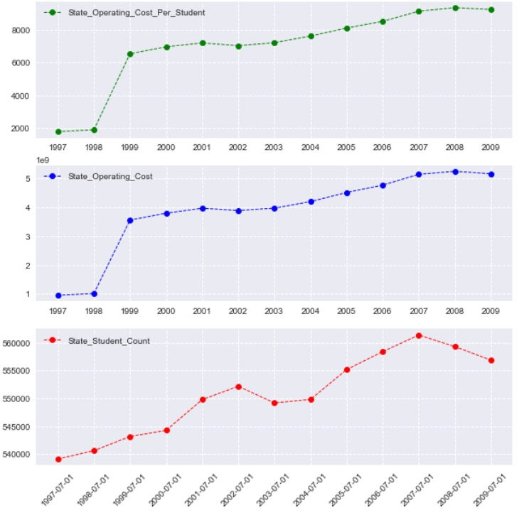

Technical Skills
-
Python, Pandas, Numpy, Matplotlib, Seaborn, Folium,
Dash by Plotly
SciPy - Web Scraping, Flask, APIs
- JavaScript, D3, Plotly, Leaflet
- R
- Perl, TCL, VBA, SQLLite, Tableau
- Unix and command-line experience
Sandhya Govindaraju
Experienced Python developer looking for a Data Science opportunity.
Experienced software developer. Vast knowledge integrating, customizing, testing, and deploying software. Partner with vendors to provide easy-to-use solutions and meet scheduled deadlines. Advocate in developing long-term relationships and communicating strategies to fulfill requirements of users. Provide consultative approach to team and customer-centric focus for success of organization.
Years of experence in coding in Python, testing (regression testing, unit testing, integration testing, code coverage). I love debugging - years of working with "blackbox" and propretary vendor tools honed those skills.
Below are some demonstration projects I have worked on recently.
|
Visualization of GitHub repository data Obtained open data on GitHub from Google BigQuery, and vizualized it using heatmap with dendrograms (scipy, plotly, seaborn), a chord diagram (d3, svg) and a force directed graph(d3, d3-force, svg) . GitHub Repository: Github language analysis See : Github repo analysis |

|

|
This work is part of a larger class project analyzing trends in music. It vizualizes Billboard Music Top 100 from 1950 using JavaScript and D3. This was deployed to Heroku along with the rest of Flask application GitHub Repository: Music PopularitySee on Heroku: Billboard Top 100 Vizualization |
|
Dashboard showng and analyzing NY real estate data, LJH Ventures Used Dash by Plotly to vizualize data on a map, and analyze it. Obtained tax information by extracting text from pdf documents. Deployed using AWS Elastic Beanstalk. |

|

|
This work is part of a larger class project analyzing higher education costs, employability and student loans. It vizualizes some parts of the National Education and Attainment Survey using Dash by Plotly. This was deployed to Heroku along with the rest of Flask application GitHub Repository: Higher EducationSee on Heroku: NEAS Vizualization |
|
Analysis of drug mortality and socio-economic conditions in Connecticut Extension of a project that I worked on with by cohort in the UT Austin Data Science Bootcamp. Used Python, Pandas, Matplotlib and Folium to create visualiations to find patterns and trends. Linear regression line is fit to the data to predict the number of deaths for 2018. Chi-squared test is used to identify disproportionately affected groups. GitHub Repository: Project 1 |

|
|  |
This project gets data about School Districts (and schools) in Oregon for the years 1997-2009 from multiple sources (https://datahub.io, https://www.ode.state.or.us), cleans, cross-correlates and analyzes them. Tools and Packages used: Python, Pandas, Matplotlib, Seaborn, Numpy, datapackage, Jupyter Notebooks. GitHub Repository: Oregon Schools |
|
Classic dots and boxes game implemented with JavaScript front-end so that it can be played in browser. Backend is in Python and the
webpages are rendered using Flask |

|

|
Classic dots and boxes game implemented as a Python package using PyGame. Unit tests included. |
| Weather pattern analysis based on latitude: Used Python, Pandas, API queries to get weather data from opensources and vizualize them using Matplotlib. | |
| Visualization of Belly Button Diversity dataset. Used Python, Flask, SQLLite, Javascript, Plotly and deplyed to Heroku. | |
- My GitHub page sandhya-sago
- Email: sandhya.govindaraju@gmail.com